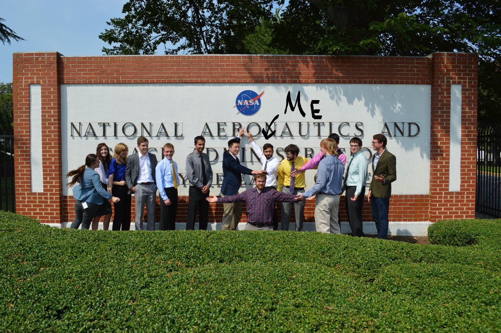

This project was a part of an internship at NASA Langley which spanned over two consecutive summers.
We built:
A low-cost high temperature 3D printing platform using (modified) open-source components from the LulzBot series of printers. Here is a whitepaper documenting this work!
A large-format 3D printer with two gantries and six unique toolheads, one that stitches carbon nanotube yarn.
Here's a picture of me and my team:
